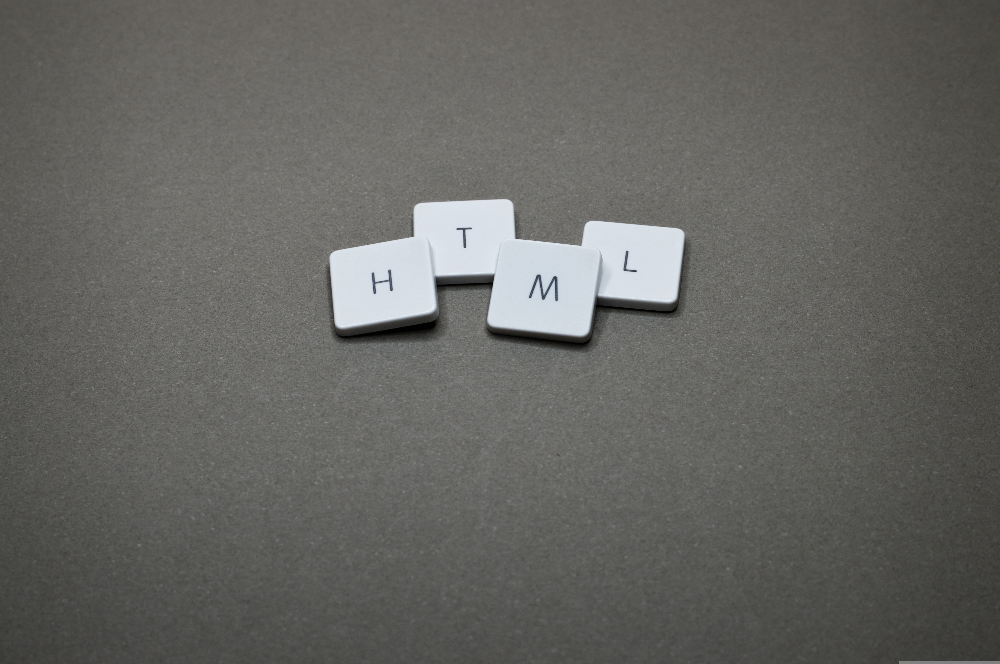

¿Qué es HTML?
HTML (HyperText Markup Language) es el lenguaje estándar utilizado para estructurar y presentar contenido en la web. No es un lenguaje de programación, sino un lenguaje de marcado: sirve para describir la semántica y la organización de los elementos que comoponen una página, como títulos, párrafos, listas, enlaces, tablas, imágenes y formularios. Al definir qué tipo de contenido aparece y cómo se agrupan las distintas parts de una página, HTML permite que navegadores y otros agentes interpertativos muestren ese contenido de forma coherente. HTML organiza el contenido mediante elementos y etiquetas que inidcan el propósito de cada bloque (por ejemplo, encabezados para títulos, secciones para agrupar contenido relacionado, o elementos para medios). Esta estructura semántica facilita el acceso, la indexación por motores de búsqueda, la accesibilidad para tecnologías asistivas y la separación entre contenido y presetnación. La presentación visual y el comportamiento interactivo suelen gestionarse mediate hojas de estilo y scripts exernos, mientras que HTML se encarga principalmente de la estrucutura y el significado del contenido. Además, HTML evoluciona para incorporar nuevas capacidades y facilitar el desarrollo de experiencias web ricas: incluye elementos para integrar multimedia, formularios avanzados, metas para describir información sobre la página y APIs que permiten la comunicación con teconologías del navegador. Su naturaleza declarativa y su amplia adopción lo convierten en la base de la creación de sitios y aplicaciones web.